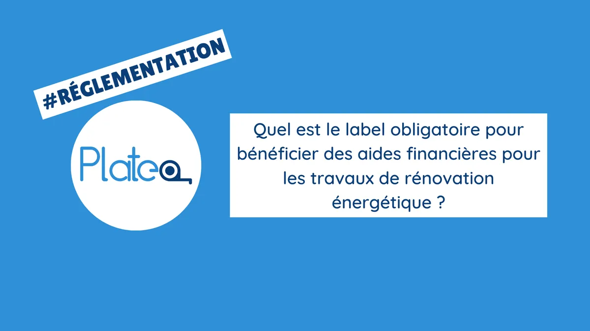

Les informations contenues dans cet article sont à jour à sa date de publication.
Il est possible que la réglementation évolue dans le temps.
Lorsqu'un bénéficiaire consomme beaucoup d'énergie, cela peut entraîner des dépenses élevées pour lui-même ainsi que pour l'environnement.
Pour réduire ces coûts, il est important d'adopter des pratiques économes en énergie telles que l'utilisation d'appareils à faible consommation d'énergie, l'isolation des bâtiments et la réduction des pertes d'énergie.
Pour encourager les propriétaires à réaliser des travaux de rénovation énergétique, l'Etat a mis en place plusieurs aides financières. Cependant, pour bénéficier de ces aides, il est obligatoire de respecter certains critères, notamment le label RGE.
Qu'est-ce que le label RGE ?
Le label RGE (Reconnu Garant de l'Environnement) est une certification délivrée aux professionnels du bâtiment qui réalisent des travaux d'efficacité énergétique dans les logements.
Cette certification garantit que les professionnels ont suivi une formation spécifique et qu'ils ont les compétences nécessaires pour réaliser des travaux de qualité dans le respect des normes en vigueur.
Le label RGE couvre plusieurs domaines tels que l'isolation, le chauffage, la ventilation, la menuiserie, etc. Il permet de distinguer les professionnels compétents et de garantir aux particuliers la qualité des travaux réalisés.
Pourquoi le label RGE est-il obligatoire pour bénéficier des aides financières ?
Le label RGE est obligatoire pour bénéficier de certaines aides financières pour les travaux de rénovation énergétique. En effet, les pouvoirs publics ont souhaité mettre en place cette obligation pour garantir la qualité des travaux réalisés et éviter les pratiques frauduleuses.
Ainsi, pour bénéficier de l'éco-prêt à taux zéro, de la prime énergie ou encore du crédit d'impôt pour la transition énergétique ou d’autres aides financières, il est obligatoire de faire appel à un professionnel certifié RGE.
Pour obtenir ce label, les professionnels doivent suivre une formation spécifique et justifier de leur expérience dans le domaine de la rénovation énergétique. Ils doivent également respecter un certain nombre de critères liés à la qualité des travaux, à la gestion des déchets et à la satisfaction des clients.
Comment trouver une entreprise RGE
Il existe plusieurs moyens pour y parvenir. Tout d'abord, il est possible de consulter la liste des entreprises labellisées RGE sur le site internet de l'ADEME (Agence de l'Environnement et de la Maîtrise de l'Energie). Cette liste permet de trouver facilement les entreprises RGE dans sa région.
Il est toutefois conseillé de vérifier les qualifications et les certifications de l'entreprise, ainsi que son expérience dans le domaine de la rénovation énergétique. Cette étape permet de s'assurer que l'entreprise possède les compétences et les connaissances nécessaires pour réaliser des travaux de qualité.
Conclusion
En conclusion, la rénovation énergétique est un enjeu crucial pour lutter contre le changement climatique et réduire les coûts énergétiques pour les bénéficiaires.
Pour bénéficier des aides financières mises en place par l'État, il est obligatoire de faire appel à un professionnel certifié RGE (Reconnu Garant de l'Environnement) pour réaliser les travaux d'efficacité énergétique. Cette certification garantit la qualité des travaux réalisés et évite les pratiques frauduleuses.
Pour trouver une entreprise RGE, il est possible de consulter la liste des entreprises labellisées sur les sites de l'ADEME. Il reste toutefois conseillé de vérifier les qualifications et les certifications de l'entreprise sélectionnée.
En adoptant des pratiques économes en énergie, en respectant les réglementations en vigueur, et en faisant appel à des professionnels compétents, vos bénéficiaires peuvent contribuer à la transition énergétique tout en réalisant des économies sur leurs factures d'énergie.